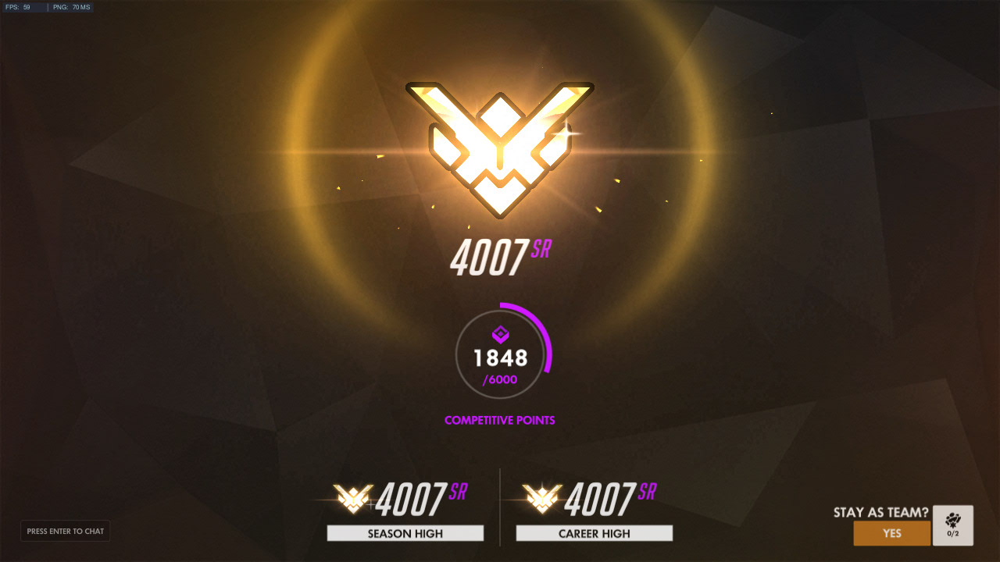

What is Overwatch?
Overwatch is a FPS (first person shooter) designed by Blizzard Entertainment. The gameplay is similar to that of Valve's Team Fortress 2 as the movement is fairly fast paced, and there are a wide variety of weapons which range from ninja stars, to rocket launchers. The game attracts users from many different titles such as Counter Strike, Team Fortress 2, Quake, League of Legends, and even World of Warcraft. The hitscan heroes (Soldier, McCree, Widowmaker) deal damage by firing bullets which instantaneously deal damage if your crosshair is hovered over the enemy targets. This type of hero is ideal for players coming from games like Counter Strike and Quake as raw aiming skill plays a large factor in the characters success. Players migrating from Team Fortress 2 would enjoy the projectile type characters more as it involves predicting enemy movement in order to deal damage with rocket launchers, grenade launchers, and arrows which all have travel time before it reaches the enemy. Experienced MOBA players (League of Legends, Dota, etc.) would find comfort in the game with the skill system. Every character has a unique skill that they can use on certain intervals, and knowing when to properly use them in a wide range of situations should be second nature. They would also greatly benefit from characters such as Winston and Genji, two characters that play around their skills more than any other character, and require the most fluid movement in the game. Last but not least, players from World of Warcraft (or MMORPGs) tend to excel the most at playing the support roles. Migrating from a lock-on spell system to a fast paced FPS is no easy task. Fortunately, the support heroes are also characters that play around their positioning, and their utility to heal their teammate does not require a great amount of mechanical skill. To put it simply, supports just have to play smart. Overwatch is a popular game because it incorporates a little bit of everything from other games with the largest playerbases.
I will share my thoughts on the Overwatch metagame from preseason 1 to season 4. My current rank is Grand Master, which is the highest skill tier in the game. This does not mean that my opinions are 100% correct, but I do believe that my understanding of the game is at a respectable level.

Preseason 1
This was a long time ago as it took place in mid 2016, BUT I will do my best to recall the meta. Lucio and Mercy were the staples for support players. McCree was just too strong of a character as his reload time was insanely short and his "Fan the Hammer" skill did 400+ damage in less than a second. With Reinhardt shield having only 2000 hp, McCree could almost instantly take down half of it by combining Fan the Hammer with his reload skill. This is a good metric to use as Reinhardt has been the premier tank for the whole lifespan of Overwatch. Widowmaker was also extremely strong during this time, as it rewarded players who had good movement as well as good aim. Being a hitscan player, this was the ideal situation for me to excel. Unfortunately, she was nerfed really hard, making her one of the most clunky characters to play.
Season 1
In this season the metagame was still not widely established and acknowledged by the playerbase. McCree was nerfed at this point, and Soldier/Pharah became the more consistent sources of damage. All the tanks except D.va were relatively strong and had their place. You could also play multiple copies of the same character, which led to team compositions such as 2 Tracers, 2 Winstons, and 2 Lucios for a dive composition during overtime. In my opinion, Tracer was my strongest character during this time because most players would just try to make individual plays instead of sticking with their teammates making them easy to pick off one at a time.
Season 2
This season was the landmark where Overwatch went downhill. Ana was introduced as a healer, and she has dominated the game ever since. Her absurd kit allows her to heal her teammates incredibly quickly from safe distances, while also being able to deal large amounts of damage to the enemy on the side. Her sleep dart is almost an instant kill if it connects onto a non-tank character, and her grenade is just too versatile when it comes to stopping the enemy from getting healed, or healing herself and her allies. Her ultimate made tanks unkillable, or ramped the damage of characters like Genji or Reaper to amounts where you would be able to kill enemies through Zenyatta's Transcendence. Hitscan became less prevalent (the highest skill role in the game), and the triple tank compositions were formed. Towards the end of season 2, Soldier 76 received a damage buff which made it better for hitscan players as he became the most reliable source of damage in the game, as of even today.
Season 3
During this time was when I took a long break from playing Overwatch. I reached 3900 skill rating (100 shy of Grandmaster), and I completely stopped playing for the remainder of the season. Symmetra and D.va got buffs to their character which made them too good at their roles, while being the LOWEST skilled characters in the game. A D.va player could walk up to any DPS character and outduel them by just holding down their left mouse button while there is no counterplay. If she starts being focused by the opposition, she could just use the defense matrix skill in different intervals to protect herself as she dashes away back to safety. On the other hand, Symmetra wasn't as powerful as D.va but her skillset was already bothersome to deal with. Either your team knew how to deal with Symmetra, or you lost the game. Making her even more powerful allowed lower skilled players to win games with little interaction on their part.
Season 4
I started playing Overwatch again in season 4 because my friends were getting into the game, which made it a lot more enjoyable than playing by myself. Not many changes were made since season 3, except for the absurd changes to bastion. Good thing Blizzard understood that he was too unbalanced and nerfed him a couple of days later.